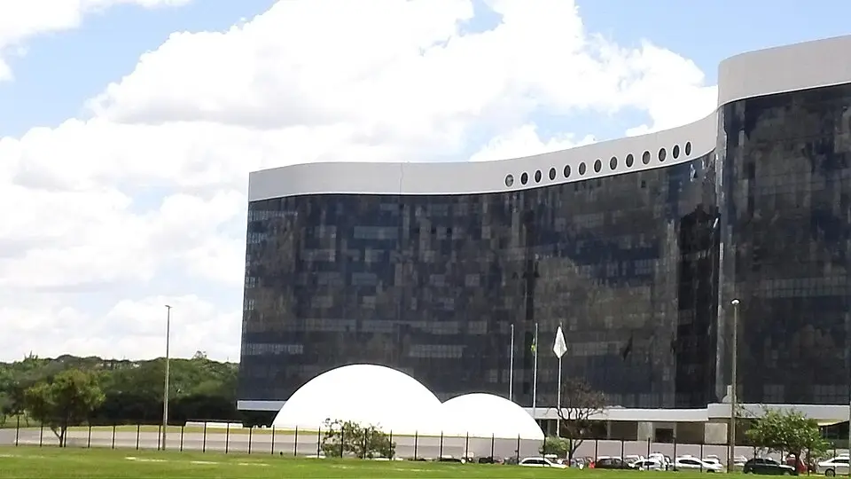
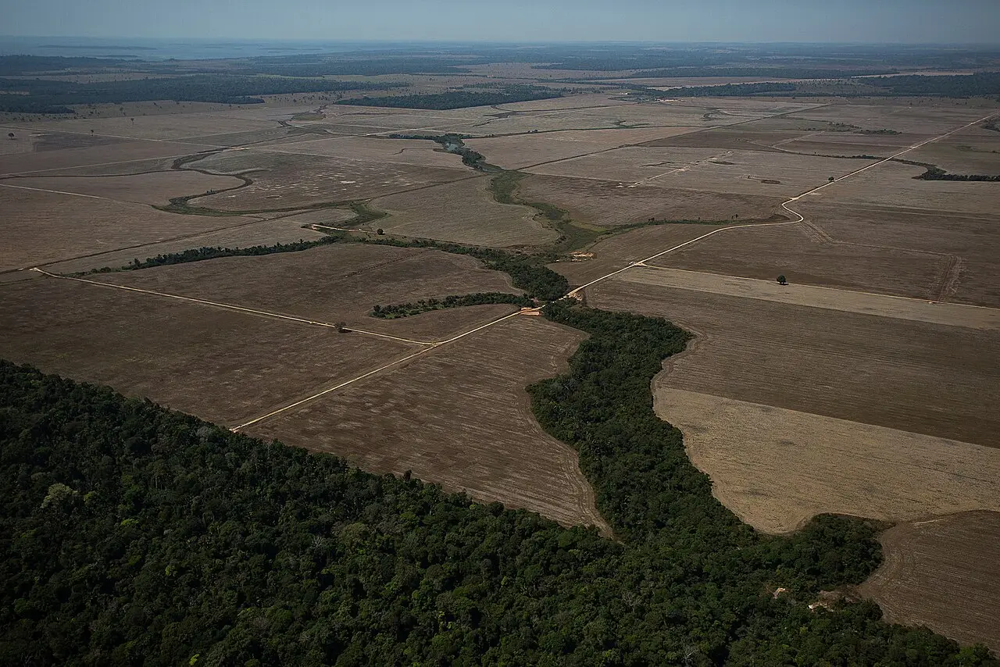
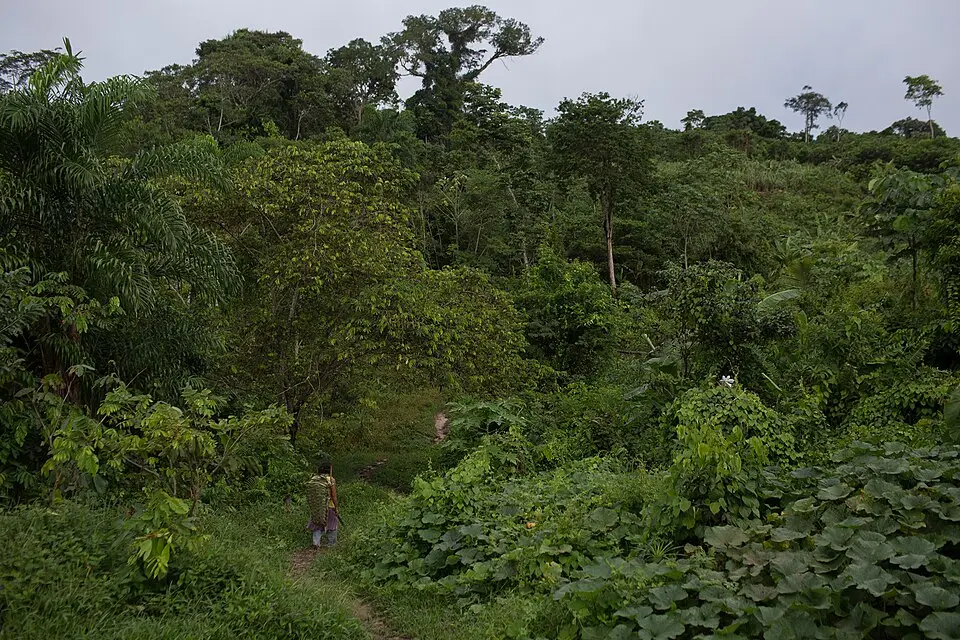
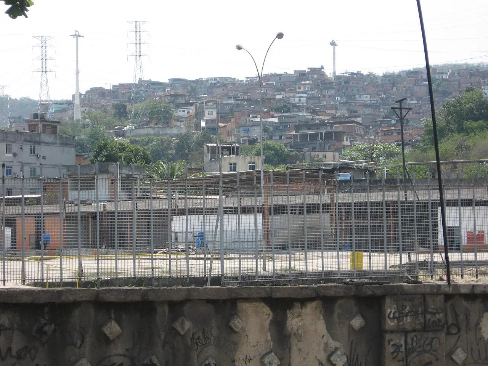

Brazil's vote: what's at stake for rights
Lula da Silva won Brazil's 25 October runoff by 51.8% to 48.2%. His rival first said he would seek to annul the vote; his party then accepted the result. The next term inherits fights over the Amazon, Indigenous land and deadly policing.
Looking for another story? See all Focus stories →

What is happening


In the 25 October runoff, Luiz Inácio Lula da Silva won a fourth term with 51.8% of valid votes to Senator Flávio Bolsonaro's 48.2%, a margin of about 4.4 million votes, the Superior Electoral Court (TSE) said. A Supreme Court judge kept polls open two extra hours at the request of both candidates, after bus disruptions in São Paulo and Salvador and heavy rain in the south. Times of Israel / AFP · CBS News

_(62)_(50224604772).jpg){kind=link}
Brazil's space agency INPE says 3,335 sq km of Amazon forest were cleared in the year to July 2026, about 42% less than a year earlier and the lowest since records began in 1988. Lula's stated goal is zero illegal deforestation by 2030; Flávio Bolsonaro pledged to end illegal deforestation by 2029. Al Jazeera

.jpg){kind=link}
Three days before the runoff, a federal court ordered the government to help Indigenous people reach polling places; some live up to 895 km away, by boat trips of three to five days. Indigenous groups such as APIB warn that the new Congress, where the Liberal Party holds 121 of 513 seats, could push to open Indigenous lands to mining. AP via WSLS · Amazon Watch


UN experts say Brazilian police kill more than 6,000 people a year, most of them Black. A 28 October 2025 raid on Rio's Alemão and Penha favelas killed 119 people by the police count, including four officers, and 132 by the public defender's count. UN experts said some bodies had hands tied or neck wounds and called for an independent investigation; Governor Cláudio Castro called the raid a 'success' against 'narcoterrorism'. EWN / AFP · Khaleej Times / Reuters · Conectas (UN experts)
The vote followed the Supreme Court's September 2025 sentence of former president Jair Bolsonaro to 27 years and 3 months for plotting a coup after the 2022 election, which barred him from running. His lawyers called it 'incredibly excessive' and said they would appeal; Flávio Bolsonaro has promised to seek an amnesty for his father. Al Jazeera · Peoples Gazette · CBS News
Abroad, governments in Europe, Russia, China, India and South Africa congratulated Lula, and Colombia's president said the will of voters 'must be respected'. US President Donald Trump, who imposed 50% tariffs on Brazilian goods in 2025 and linked them to Bolsonaro's prosecution, called it 'another rigged election'. Lula said Brazil 'will not accept being anyone's backyard'. Times of Israel / AFP · CBS News · Al Jazeera · Peoples Gazette
TSE president Kassio Nunes Marques praised the 'successful polls' and said there 'were no changes' to the result from the two-hour extension. Flávio Bolsonaro called the extension 'unacceptable' and a 'dirty trick' and first said he would seek annulment; on 26 October his Liberal Party said: 'We recognize the presidential election results, as proclaimed by the Superior Electoral Court.' Rio's governor called the 2025 raid a success against 'narcoterrorism'. Times of Israel / AFP · CBS News · EWN / AFP
Other Focus stories
- Tibet human rights: boarding schools, monks jailed, succession
- Sudan war: civilian deaths, displacement and the RSF
- Siang dam protests, Arunachal: 69 arrests, 200+ police notices
- Congo cobalt and coltan mining: child labour, M23 and Apple
- Indonesia haze 2026: Kalimantan and Sumatra fires
- India, Meta and protest posts: who decides what you see online